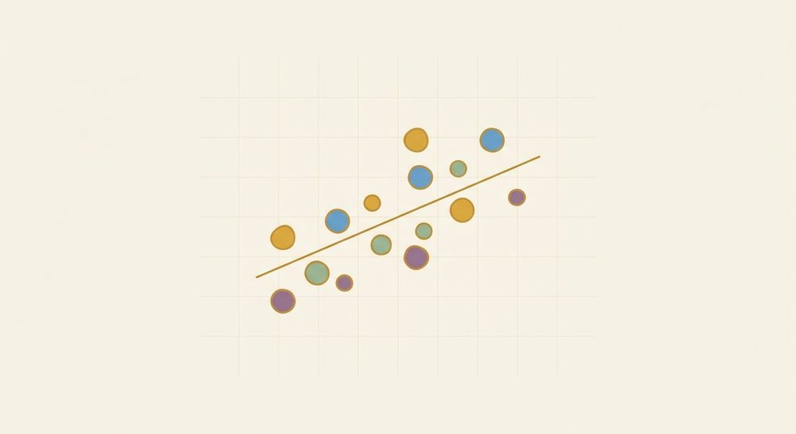

Data & Statistics
One/two-variable statistics, line of best fit, correlation vs. causation, two-way tables

Prerequisites: Unit 5 (graphing lines, f(x)=mx+b) for Lesson A.2. Lessons A.1 and A.3 need only arithmetic and fractions/percents (Unit 3). By the end, the student can:
- Compute and interpret mean, median, mode, and range for a small data set, name an outlier and its effect, and say when the median is the fairer "center."
- Read a scatter plot, check whether its form is roughly linear before fitting a line, describe its association, use a given line of best fit to predict, read a correlation qualitatively, and explain why correlation ≠ causation.
- Organize categorical data in a two-way table, find row/column totals, read a count and a relative frequency, and compare conditional relative frequencies to decide whether two variables are associated.
Teaching this unit (orientation for the tutor)
This is the "where does algebra show up in real life" unit, so lead with relevance and keep it concrete. It's the course's data-literacy strand: three short, mostly independent lessons. A.1 (one-variable center & spread) and A.3 (two-way tables) are pure arithmetic-and-fractions; A.2 (line of best fit) is the payoff — it reuses Unit 5's f(x)=mx+b on messy real data, so it lands best once Unit 5 is solid.
This is data literacy, not heavy computation, so keep it appropriately light — a couple of worked examples and a handful of practice problems per lesson carry each idea; you don't need to grind. The point is judgment about data, not arithmetic volume. The biggest conceptual win is correlation vs. causation in A.2 — make sure that one lands, because it's a lifelong critical-thinking tool.
Keep the standard habits from SKILL.md (verify arithmetic, never yes/no checks). The main misconception traps are light: forgetting to order the data before taking the median, treating "the average" as always the fair center, fitting a line to a cloud that isn't actually straight, and reading "two things move together" as "one causes the other." Lean on everyday framings rather than formulas — describe a correlation by eye, and define standard deviation only in words; don't compute either.
Lesson A.1: One-variable statistics — center & spread
What you'll learn
Given a small list of numbers, compute the mean, median, mode, and range, and judge when the median describes the "typical" value better than the mean.
"What's typical?" and "how spread out is it?" are the two questions you ask of any pile of numbers — test scores, prices, wait times. These four numbers are the everyday toolkit.
New words
- A.1.d1 Mean (average): add all the values, divide by how many there are. The "fair share" if everyone got the same.
- A.1.d2 Median: the middle value once the data is put in order. With an even count, average the two middle ones.
- A.1.d3 Mode: the value that appears most often. A set can have one mode, two or more, or — when nothing repeats — none. (That "nothing repeats → no mode" is a labeling convention; some books instead say every value is a mode. We'll use "no mode" here.)
- A.1.d4 Range: max - min — how far the biggest is from the smallest. A first measure of spread.
- A.1.d5 Outlier: a value sitting far above or below where the rest of the numbers cluster — an unusually huge or tiny entry compared with its neighbors. Outliers are the reason the mean and median can disagree (see below).
- A.1.d6 Spread (intuition): are the numbers clustered tightly together or scattered widely apart? Range is the quick version; standard deviation is just a single number summarizing the typical distance of values from the mean (a special kind of averaged distance) — bigger means more spread out. (We name it for vocabulary only; no need to compute it here.)
How this builds
- Concrete: "Five friends' quiz scores — what's a typical score, and were they all close or all over the place?" Typical = center (mean/median/mode); all over the place = spread (range).
- Pictorial: Drop the values on a number line. The mean is the balance point; the median is the one with equal counts on each side; clustering vs. scattering is visible at a glance.
- Symbolic: mean =sum/count; median = middle of the ordered list; range =max-min.
When the median beats the mean: one outlier drags the mean toward itself but barely moves the median. To spot an outlier in a small list, scan for a value sitting far away from where the rest cluster. Classic case: a few ordinary salaries plus one CEO's — the mean salary looks high, the median tells the truer "typical" story. Use the median when the data is skewed or has outliers. (The mean isn't "wrong" — if those extreme values genuinely matter, e.g. a total bill, the mean is the right summary; it's "typical" specifically that the median reports better.)
Worked example
-
A.1.w1 Data set {4, 8, 6, 5, 2} (5 values). - Mean: (4+8+6+5+2)/5 = 25/5 = 5. - Median: order it → 2, 4, 5, 6, 8; the middle value is 5. - Range: 8 - 2 = 6. - (No value repeats, so there's no mode.)
-
A.1.w2 Data set {2, 2, 3, 9} (4 values — even count). - Mean: (2+2+3+9)/4 = 16/4 = 4. - Median: ordered 2, 2, 3, 9; average the two middle values: (2+3)/2 = 2.5. - Mode: 2 (appears twice). - Range: 9 - 2 = 7. - Note the 9 is an outlier: it pulls the mean (4) above the median (2.5). The median better describes "typical" here.
-
A.1.w3 Spotting an outlier and its effect. Data set {3, 4, 5, 6, 30}. Ordered, it's already 3, 4, 5, 6, 30 — four values clustered near 3–6, then one that's far above the rest: 30 is the outlier. - Mean: (3+4+5+6+30)/5 = 48/5 = 9.6. - Median: the middle of the ordered list is 5. - Already the mean (9.6) sits well above the median (5) and above every clustered value — that gap is the outlier talking. - Now drop the outlier (just 3, 4, 5, 6): the mean falls all the way to (3+4+5+6)/4 = 18/4 = 4.5, while the median only shifts from 5 to (4+5)/2 = 4.5. So removing 30 moved the mean by 5.1 but the median by only 0.5 — the outlier dragged the mean, but the median barely budged. That's exactly why the median is the fairer "typical" when an outlier is present.
A common mix-up
- Taking the median without ordering first — the single most common slip. Tell: their "middle" value isn't actually in the center once sorted. Cue: "Line them up smallest to largest first, then point to the middle."
- Even-count median — forgetting to average the two middle values.
- Mode confusion — assuming every set has exactly one mode (it can have none, or several). "Most frequent — and sometimes nothing repeats."
- Calling the mean 'the' answer for typical when an outlier is present — that's the median's job.
Figures to use
none needed (a number line sketched in ASCII per visuals.md can show the balance/middle idea if it helps; keep it light).
Check yourself
- A.1.c1 "A house on your street sells for \$50,000, \$60,000, \$55,000, and one mansion for \$2,000,000. Would you describe 'typical' with the mean or the median, and why?"
- A.1.c2 "I have five numbers with mean 10. If I add a sixth number equal to 10, does the mean change? What if I add a 40?"
- A.1.c3 "Two classes both averaged 80 on a test, but one class's scores were all near 80 and the other's ranged from 50 to 100. Which fact is about center and which is about spread?"
- A.1.c4 "In the set {3, 4, 5, 6, 30}, which value is the outlier, and what does it do to the mean compared with the median? If you removed it, which of the two would change a lot and which would barely move?"
Practice problems (for each set, find the mean, median, mode, and range):
- A.1.1 {3, 7, 7, 9, 4}
- A.1.2 {10, 12, 14, 12}
- A.1.3 {1, 2, 2, 2, 8}
- A.1.4 {5, 5, 6, 8}
- A.1.5 {15, 25, 25, 35}
- A.1.6 {6, 6, 6, 6}
- A.1.7 {2, 4, 4, 6, 9}
- A.1.8 {2, 5, 5, 8, 10}
- A.1.9 {1, 1, 2, 4}
- A.1.10 {3, 3, 7, 8, 9}
- A.1.11 {2, 4, 5, 6, 8} (which mode case is this?)
- A.1.12 {3, 3, 7, 7, 30} (spot the outlier — what does it do to the mean vs. the median?)
Answer key (mean · median · mode · range):
- 6 · 7 · 7 · 6
- 12 · 12 · 12 · 4
- 3 · 2 · 2 · 7
- 6 · 5.5 · 5 · 3
- 25 · 25 · 25 · 20
- 6 · 6 · 6 · 0
- 5 · 4 · 4 · 7
- 6 · 5 · 5 · 8
- 2 · 1.5 · 1 · 3
- 6 · 7 · 3 · 6
- 5 · 5 · no mode · 6 — nothing repeats, so there's no mode.
- 10 · 7 · 3 and 7 (bimodal) · 27 — 30 is the outlier: it drags the mean up to 10 while the median stays at 7.
Lesson A.2: Two-variable data — line of best fit, correlation vs. causation
What you'll learn
Read a scatter plot of paired data, describe its association, use a given line of best fit to make a prediction, and explain why correlation does not prove causation.
This is where Unit 5's lines earn their keep on real, messy data: a line of best fit lets you summarize a cloud of points and predict beyond it. And spotting correlation-vs-causation is one of the most useful thinking skills algebra gives you.
New words
- A.2.d1 Scatter plot: a coordinate-plane graph of paired data — each data point is one (x, y) dot (e.g. hours studied vs. test score).
- A.2.d2 Association: the overall trend in the cloud of dots:
- Positive — as x goes up, y tends to go up (dots rise left-to-right).
- Negative — as x goes up, y tends to go down (dots fall).
- No association — no clear up-or-down trend.
- A.2.d3 Form: the shape of the cloud — does it run roughly along a straight line (linear) or does it curve / bend (nonlinear)? Form is a separate question from direction, and it's the one that decides whether a line is even the right summary.
- A.2.d4 Line of best fit: a straight line f(x)=mx+b drawn to pass as close as possible to all the dots — the same linear function from Unit 5, now fit to data that doesn't sit perfectly on any line. Used to predict a y for a new x. (A line is only appropriate when the form is roughly linear — see the teaching arc.)
- A.2.d5 Correlation: a measured tendency for two variables to move together. Read it qualitatively here: its direction (positive or negative, from which way the cloud leans) and its strength — strong if the dots hug the line tightly, weak if they're loosely scattered around it. Causation: one variable actually makes the other change. Correlation and causation are not the same.
How this builds
- Concrete: "Plot every (hours studied, score) pair as a dot. They won't land on one neat line — real data is messy. But you can see a trend, and draw the line that best threads through the cloud."
- Pictorial: Show a small scatter and a line running through the middle of it (
visuals.mdTemplate 2 mapping — coordinate plane with computed plotted points, then the best-fit line on top; always pair it with the table of points). The line need not hit any single dot; it captures the overall direction. While the picture is up, read the correlation by eye: which way does it lean (positive/negative), and how tightly do the dots hug the line — a narrow band is a strong correlation, a loose scatter is a weak one. - Check the form FIRST (do this before you fit or trust a line): glance at the cloud and ask "is this roughly straight?" A line of best fit only makes sense when the dots run approximately along a line. If the cloud curves (bends like a U or arch) or is a shapeless blob, a straight line is the wrong model — fitting one would summarize and predict badly no matter how carefully you draw it. So the order is: see the dots → check the form is linear → then fit/use a line. (Also scan for an outlier — one dot sitting far off the trend — since a single stray point can tilt the line.)
- Symbolic — callback to Unit 5: Once you've confirmed a line is appropriate and have f(x)=mx+b, prediction is just evaluating the function (Unit 5.4): plug in an x, read off the predicted y. Same machine, applied data.
Correlation ≠ causation (make this land): In summer, ice cream sales and drowning incidents both rise — they're correlated. But ice cream doesn't cause drownings; a hidden third cause, hot weather, drives both (more ice cream and more swimming). That hidden third factor has a name — statisticians call it a lurking (or confounding) variable — but the everyday idea is what matters: "two things move together" never by itself proves "one causes the other." Always ask: could a third factor explain both? could it be coincidence?
Worked example
-
A.2.w1 A line of best fit for some data is y = 2x + 3. Predict y when x = 5: $$y = 2(5) + 3 = 10 + 3 = 13.$$ (Same as evaluating f(5) for f(x)=2x+3 — Unit 5.4.) So we'd predict about 13. Stress "about": a best-fit prediction is an estimate, not a guarantee.
-
A.2.w2 Describe the association. A scatter of (hours studied, test score) shows dots that climb left-to-right — students who studied more generally scored higher. That's a positive association. A scatter of (hours of TV, test score) whose dots drift downward would be a negative association. A scatter of (shoe size, test score) with dots scattered every which way shows no association.
-
A.2.w3 Correlation vs. causation. "Towns with more firefighters at a blaze tend to have more fire damage." Does sending firefighters cause damage? No — bigger fires (the lurking variable) cause both more firefighters being called and more damage. Correlation, not causation.
-
A.2.w4 Check the form before fitting a line. Two scatter plots. In the first, (hours studied, score) dots run in a roughly straight, rising band — the form is linear, so a line of best fit is a sensible summary; fit it. In the second, plotting (hours of practice, score) the dots rise quickly then level off, bending into an arch shape — the form is nonlinear, so a straight line is the wrong model here: it would overshoot the leveling-off part and predict badly. Same with a shapeless blob — no line summarizes it. The move: look at the form first; only fit a line when the cloud is roughly straight.
-
A.2.w5 Read a correlation qualitatively (direction + strength). Suppose two scatter plots both lean upward (positive direction). In plot A the dots sit in a tight, narrow band right along the trend; in plot B they're loosely scattered in a fat cloud around it. Both are positive, but plot A shows a strong correlation and plot B a weak one — strength is just how tightly the dots hug the line. (You read this by eye; you do not compute a number for it at this level.)
A common mix-up
- "Correlation proves causation" — the headline trap. Tell: the student leaps from "they move together" to "X causes Y." Repair with the ice-cream/drowning or firefighter example and the "is there a third cause?" question.
- Fitting a line to a cloud that isn't straight — the form trap. Tell: the student reaches for a line of best fit on a clearly curved or shapeless scatter. Cue: "First — is this cloud roughly straight? If it bends or has no shape, a line is the wrong tool." A confidently-drawn line on curved data is worse than admitting no line fits.
- Expecting points to sit exactly on the line — real data is scattered; the best-fit line is a summary, not a perfect fit.
- Reversing the association (calling a downward trend "positive"). Cue: "As x increases, does y go up or down?"
- Confusing strength with direction — "strong" is how tightly the dots hug the line; "positive/negative" is which way it leans. A weak positive and a strong positive both lean up.
- Over-trusting predictions far outside the data — a best-fit line predicts best near the data it came from (a within-range prediction is safer than one reaching far past the data).
Figures to use
A.2.f1 visuals.md Template 2 (coordinate plane + line). Compute the plotted points and the two line endpoints (don't eyeball), emit as an SVG artifact, label the axes and the line equation, and always include the companion table of points in chat. A scatter is just the plane with several small <circle> dots plus the best-fit line drawn through them.
Check yourself
- A.2.c1 "A best-fit line is y = -(1/2)x + 10. Predict y at x = 4, and say whether the association is positive or negative — how can you tell from the equation?"
- A.2.c2 "Sales of sunglasses and the number of people getting sunburned both rise in July. Are they correlated? Does one cause the other? What's really going on?"
- A.2.c3 "Two scatter plots: in one the dots rise steadily; in the other they're a shapeless blob. Describe each association in words."
- A.2.c4 "Before you draw a line of best fit, what should you check about the shape of the scatter? Describe a cloud where a straight line would be the wrong summary, and say why."
- A.2.c5 "Two scatters both lean upward, but one is a tight narrow band and the other a loose fat cloud. Which shows the stronger correlation, and does 'stronger' change whether it's positive or negative?"
Practice
Predict using the given line of best fit. The line in 1–2 was built from data that ran from x = 1 to x = 6:
- A.2.1 y = 2x + 3; predict y at x = 5. Is this prediction inside the data range or outside it?
- A.2.2 y = 2x + 3; predict y at x = 10. Inside or outside the data range — and which of 1 or 2 is the more trustworthy prediction, and why?
- A.2.3 y = 3x - 1; predict y at x = 4.
- A.2.4 y = -2x + 10; predict y at x = 3. Then say whether the association is positive or negative, and how the equation tells you.
- A.2.5 y = (1/2)x + 1; predict y at x = 6.
Conceptual (describe / explain):
- A.2.6 A scatter of (hours studied, score) has dots climbing left-to-right. Positive, negative, or no association?
- A.2.7 A scatter of (hours of TV, score) has dots drifting downward left-to-right. Which association is that?
- A.2.8 "Children with bigger feet tend to read better." Is bigger feet causing better reading? Name a likely third factor (the lurking variable).
- A.2.9 A scatter's dots rise steeply, then flatten out into an arch — they clearly curve rather than run straight. Should you summarize this with a line of best fit? Why or why not?
- A.2.10 Two scatters both lean upward; in one the dots sit in a tight narrow band, in the other a loose fat cloud. Which has the stronger correlation? Are both still positive?
AnswersTry each one yourself first, then open to check.
- 2(5)+3 = 13. Inside the data range (x = 5 is within 1–6) — an interpolation.
- 2(10)+3 = 23. Outside the range (x = 10 is past 6) — an extrapolation. Problem 1 is more trustworthy: a best-fit line predicts best near the data it came from; x = 10 reaches well beyond it.
- 3(4)-1 = 11.
- -2(3)+10 = 4. Negative association — the slope is negative (-2), so as x rises, y falls.
- 1/2(6)+1 = 4.
- Positive association (as x rises, y rises).
- Negative association (as x rises, y falls).
- No — correlation, not causation. The hidden third factor (lurking variable) is age: older children have bigger feet and read better.
- No — the form is nonlinear (it curves), so a straight line is the wrong model; it would fit and predict poorly. Check the form is roughly straight before fitting a line.
- The tight narrow band shows the stronger correlation. Yes, both are still positive — strength (tight vs. loose) is a separate question from direction (up vs. down).
Lesson A.3: Two-way tables
What you'll learn
Organize categorical data (yes/no, type A/type B) in a two-way table, compute row and column totals, read off a count and a relative frequency, and compare conditional relative frequencies across groups to decide whether the two variables are associated.
Survey and yes/no data ("owns a pet? lives in an apartment?") is everywhere, and a two-way table is the clean way to see how two categories interact, turn raw counts into percentages, and answer the real question: does one category go with the other?
New words
- A.3.d1 Categorical data: data sorted into groups/labels (yes/no, apartment/house), not measured numbers.
- A.3.d2 Two-way table: a grid with one category across the rows and another across the columns; each inner cell holds a count.
- A.3.d3 Row total / column total (marginals): the sum across a row or down a column. The corner grand total is everyone.
- A.3.d4 Relative frequency: a count expressed as a fraction or percent of a total — count/total. Which total you divide by depends on the question:
- Joint relative frequency — a single cell over the grand total (e.g. "owns a pet and lives in an apartment, out of everyone").
- Conditional relative frequency — a cell over its row or column total, i.e. a rate within one group (e.g. "of the apartment dwellers, the share who own a pet"). These are the ones you compare to detect association.
- A.3.d5 Association (for two categories): two categorical variables are associated when a conditional relative frequency differs across groups — e.g. if the pet-ownership rate among apartment dwellers is clearly different from the rate among house dwellers, then where you live and owning a pet are associated. If those rates are about equal, there's little or no association. (This is the categorical-data echo of A.2's positive/negative association for scatter plots.)
How this builds
- Concrete: "We surveyed 50 people: does each own a pet, and do they live in an apartment? Sort them into four buckets." Each bucket is a cell.
- Pictorial: Lay it out as a grid with a totals row and column. Seeing the marginals add up to the grand total is a built-in check.
- Symbolic: A count is read straight from a cell. A relative frequency is (cell (or total))/(chosen total), then converted to a percent.
Worked example
50 people surveyed — owns a pet (rows) × lives in an apartment (columns):
$$\begin{array}{c|c|c|c} & \text{Apartment} & \text{House} & \textbf{Total} \\ \hline \text{Pet: Yes} & 6 & 24 & \mathbf{30} \\ \hline \text{Pet: No} & 14 & 6 & \mathbf{20} \\ \hline \textbf{Total} & \mathbf{20} & \mathbf{30} & \mathbf{50} \end{array}$$
- Row totals: Pet-Yes =6+24=30; Pet-No =14+6=20.
- Column totals: Apartment =6+14=20; House =24+6=30.
- Grand total: 30+20=50 (check: 20+30=50).
- Read a count: people who own a pet and live in an apartment =6 (top-left cell).
- Joint relative frequency (of everyone): fraction who own a pet =30/50=3/5=60%.
- Conditional relative frequency (within a column): of the 20 apartment dwellers, the fraction owning a pet =6/20=3/10=30%. (Note how the total you divide by changes with the question.)
Does owning a pet go with where you live? (compare the conditional rates):
- Pet rate among apartment dwellers =6/20=3/10=30%.
- Pet rate among house dwellers =24/30=4/5=80%.
- These two conditional rates are very different — 30% vs. 80% — so owning a pet and where you live ARE associated: house dwellers are far more likely to own a pet. (Compare with the overall 60%: each group sits well off it.) If instead both groups had landed near 60%, the rates would be about equal and we'd say there's little or no association. This "compare the rates across rows/columns" move is exactly how a two-way table reveals association — the categorical cousin of A.2's positive/negative association.
A common mix-up
- Wrong denominator — dividing by the grand total when the question asks "of the apartment dwellers…" (use the column total there). Cue: "Out of which group? That group's total is your denominator."
- Totals that don't reconcile — row totals and column totals must both sum to the same grand total; if not, a cell was misread.
- Confusing 'and' with a conditional — "owns a pet and in an apartment" (a joint relative frequency: one cell over the grand total) vs. "of apartment dwellers, owns a pet" (a conditional relative frequency: that cell over the column total). Different denominators, different questions.
- Reading association off one rate alone — a single conditional rate (e.g. "30% of apartment dwellers own pets") says nothing by itself; association is about whether that rate differs from the other group's. Always compute both rates and compare.
- Fraction → percent slips — reuse Unit 3 (3/5=0.6=60%).
Figures to use
none needed — the LaTeX array table above renders cleanly in chat (per visuals.md, area-model/table boxes use LaTeX, not an artifact).
Check yourself
- A.3.c1 "Using the table, what fraction of house dwellers own a pet? Which total did you divide by, and why?"
- A.3.c2 "If I told you the four inner counts but no totals, how would you find the grand total two different ways — and what does it mean if they disagree?"
- A.3.c3 "What's the difference between 'owns a pet and lives in a house' (a joint relative frequency) and 'of house dwellers, the share who own a pet' (a conditional one)?"
- A.3.c4 "The apartment dwellers own pets 30% of the time and the house dwellers 80% of the time. From comparing those two rates, are owning a pet and where you live associated? How would the rates look if they were not associated?"
Practice problems — use this table of 50 students, plays a sport (rows) × wears glasses (columns):
$$\begin{array}{c|c|c|c} & \text{Glasses} & \text{No Glasses} & \textbf{Total} \\ \hline \text{Sport: Yes} & 14 & 6 & ? \\ \hline \text{Sport: No} & 6 & 24 & ? \\ \hline \textbf{Total} & ? & ? & ? \end{array}$$
- A.3.1 Find the row total for Sport: Yes.
- A.3.2 Find the column total for Glasses.
- A.3.3 Find the grand total.
- A.3.4 How many students play a sport and wear glasses?
- A.3.5 What percent of all students wear glasses?
- A.3.6 Of the students who wear glasses, what percent play a sport? (a conditional relative frequency)
- A.3.7 Of the students who don't wear glasses, what percent play a sport? Compare this with your answer to #6 — are playing a sport and wearing glasses associated? Explain.
AnswersTry each one yourself first, then open to check.
- 14+6=20
- 14+6=20
- 50 — add the row totals (20+30) or the column totals (20+30); both give 50.
- 14 (top-left cell)
- 20/50=2/5=40%
- 14/20=7/10=70%
- 6/30=1/5=20%. The two conditional rates are far apart — 70% (glasses) vs. 20% (no glasses) — so yes, playing a sport and wearing glasses are associated here (sport-players are much more likely to wear glasses). If the two rates had been about equal, there'd be little or no association.
Wrap-up & interleaving
Putting it together
the student now has a small statistics toolkit — center & spread for one variable, including spotting an outlier and its pull on the mean (A.1); scatter plots + checking the form is linear before fitting + best-fit lines + reading a correlation by eye + correlation/causation for two variables (A.2); and two-way tables + relative frequency + comparing conditional rates to detect association for categorical data (A.3). The unifying algebra idea is A.2's punchline: a line of best fit is just f(x)=mx+b from Unit 5, fit to messy data and used to predict — once you've confirmed a line is the right shape for the cloud. A second throughline worth naming: association shows up in both A.2 (direction of a scatter) and A.3 (conditional rates differing across groups).
Mix back in
- Unit 3 (fractions, percents, rates): relative frequencies in A.3 and the "average rate" feel of slope in A.2 are Unit 3 skills reused.
- Unit 5 (lines & f(x)): A.2 is a direct application — predicting is evaluating the function; describing positive/negative association is reading the sign of the slope.
Pacing: it's a light, applied unit — three short, self-contained lessons. Land the ideas with a couple of examples each rather than grinding; the goal is data judgment, not arithmetic volume.
Progress card
which lessons the student worked through and that the data-literacy toolkit was covered. The ideas worth recording as "learned" when they come up: correlation ≠ causation, check the form is linear before fitting a line, and compare conditional rates to spot association.